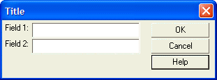

The Help Command
The syntax for the {Help} command is:
{Help=help_filename:help_topic_name} |
To cause the pop-up help to appear when the user presses a button, (as opposed to when the F1 key is pressed), the button should invoke the UI_DLG_HELP([topic_id]) function. If you do not specify the topic_id, the topic id in the last {Help} command encountered is used.
For example, the following command sets the help file and help topic:
{help=c:\mya5data\myapp.hlp:topic_1} |
The help file name is c:\mya5data\myapp.hlp, and the topic id is topic_1.
The following script displays a dialog. There is context sensitive help for each of the fields on the dialog. If the user presses the F1 key when 'Field 1' has focus, the help for 'Field 1' is displayed, and so on. If the user presses the 'Help' button, then help for the dialog as a whole is displayed.
 Note : This script makes reference to a help file called learningXdialog.hlp in the same folder as the Learning Xdialog folder. This help file has the following topic_id 's: field_1, field_2, and main_help.
Note : This script makes reference to a help file called learningXdialog.hlp in the same folder as the Learning Xdialog folder. This help file has the following topic_id 's: field_1, field_2, and main_help.
help_file_name = a5.Get_Path()+"\learningxdialog.hlp" field_1_help = "{help="+help_file_name+":"+"Field 1"+"}" field_2_help = "{help="+help_file_name+":"+"Field 2"+"}" ui_dlg_box("Title",<<%dlg% {region} {include=field_1_help} Field 1: [.30field1]; {include=field_2_help} Field 2: [.30field2] {endregion}| {region} <*10&OK>; <10&Cancel>; <15&Help> {endregion} %dlg%,<<%code% if a_dlg_button = "&Help" then a_dlg_button = "" ui_dlg_help(help_file_name+":Main Help") end if %code%) |

Lesson 9: Adding Help from a Standard Window "hlp" or "chm" File
When the user presses the F1 key, when Field 2 has focus, the following help screen is displayed.

When the user presses the Help button, the following help screen is displayed:

In the above script, the first command:
help_file_name = a5.Get_Path()+"\learningXdialog.hlp" |
computes the full filename (with drive and path) of the learningXdialog.hlp file. The command prefixes the drive and path of the current database to 'learningXdialog.hlp'.
The commands:
field_1_help = "{help="+help_file_name+":"+"Field_1"+"}" field_2_help = "{help="+help_file_name+":"+"Field_2"+"}" |
compute string values and assign them to variables.
Assuming that the help_file_name variable is c:\A5\learningXdialog.hlp, field_1_help is equal to:
{help=c:\A5\learningXdialog.hlp:Field_1} |
This is the syntax for the {help} command.
Within the body of the dialog, the command:
{include=field_1_help} |
is equivalent to the command:
{help=c:\A5\learningXdialog.hlp:Field_1} |
 Note : If we knew in advance what the path of the learningXdialog.hlp file was, we could have included the command {help=c:\A5\learningXdialog.hlp:Field_1} directly in the body of the Xdialog code. However, since we have to compute the actual filename of the help file, we must use the technique of using the missing page for plugin INCLUDE
Note : If we knew in advance what the path of the learningXdialog.hlp file was, we could have included the command {help=c:\A5\learningXdialog.hlp:Field_1} directly in the body of the Xdialog code. However, since we have to compute the actual filename of the help file, we must use the technique of using the missing page for plugin INCLUDE
command to incorporate a dynamically calculated Xdialog command into the dialog.
When the user presses the Help button, the following code is executed:
a_dlg_button = "" ui_dlg_help(help_file_name+":main_help") |
The first line sets the event variable to a NULL so that the dialog remains open. The second line uses the UI_DLG_BOX()function to call the help file with the specified topic id.
Next
Limitations
Desktop applications only